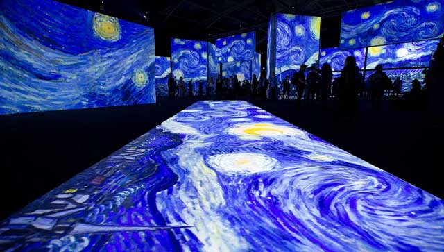
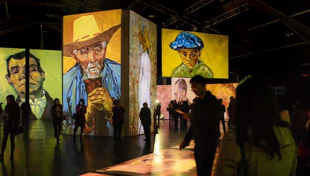

Van Gogh Alive Canberra winery tour package
Deux Van Package - Van Gogh Alive Canberra and Van Du Vin winery tour package.
Lend me an ear
When two Vans are just better. Go with Van Du Vin to Van Gogh Alive Canberra, the multi-sensory art experience seen in over 70 countries and by nearly 9 million people worldwide.
In Canberra for a limited season in March 2022, Van Du Vin would like to keep your senses alive after the exhibition with a tour of Canberra's award winning cool climate boutique wineries.
You'll Go(gh) further
The Deux Van Package includes transport to the Van Gogh Alive Canberra experience from your choice of Canberra location, entry tickets, 3-4 wine tasting stops and wood-fire pizza lunch.
Prices
- Minimum 2 guests - $350 per person
- 3-4 guests - $300 per person
- 5-6 guests - $275 per person
- Groups larger than 6, please contact us for a custom quote
There is a 10% surcharge applied on Sundays.
About the Van Gogh Alive Canberra winery tour package
Created by Grande Experiences, Van Gogh Alive gives visitors the unique opportunity to immerse themselves into Van Gogh’s artistry and truly venture into his world. Traditions of tiptoeing through silent galleries and viewing paintings from afar in quiet contemplation are forgotten as visitors find themselves interacting with art in ways they never imagined. From start to finish, visitors are surrounded by a vibrant symphony of light, colour, sound and fragrance that has been called an ‘unforgettable’ multi-sensory experience.
Van Gogh’s masterpieces come to life, giving visitors the sensation of walking right into his paintings, a feeling that is simultaneously enchanting, entertaining and educational.
To learn more about Van Gogh alive experience visit their website.
Your tour will include:
- Transport to and entry general admission tickets Van Gogh Alive experience Canberra
- Wood-fire pizza lunch (gluten free, vegetarian and vegan options available)
- 3-4 wine tasting stops at cellar doors in the Canberra wine region
- Transport in clean and modern air-conditioned vehicles
- Pickup and drop-off to your choice of location in the Canberra region
- Friendly, professional and Canberra food and wine obsessed tour guide and driver
- Refrigerated cold drinks available in the vehicle
Sample itinerary for
- 9.30am - Depart your choice of location in the Canberra region
- 10.00am - Van Gogh Alive experience Canberra
- 12.00pm - Four Winds Vineyard wine tasting and wood-fire pizza lunch
- 2.00pm - Eden Road wine tasting
- 3.00pm - Mckellar Ridge wine tasting and winery tour
- 4.00pm - Gallagher Wines wine tasting with matching house made cheese and pickles
- Arrive back in Canberra 5.30pm

We don't paint our guests with the same brush
All our tours are private tours. You won't be mixed with other groups. However, the experience at the art experience is mixed with other guests. We can always try to tailor tours to include wineries you would like to visit, or we can create a tour tailored to a specific type of wine you prefer. Just let us know during the booking process what your preferences are if you have any.